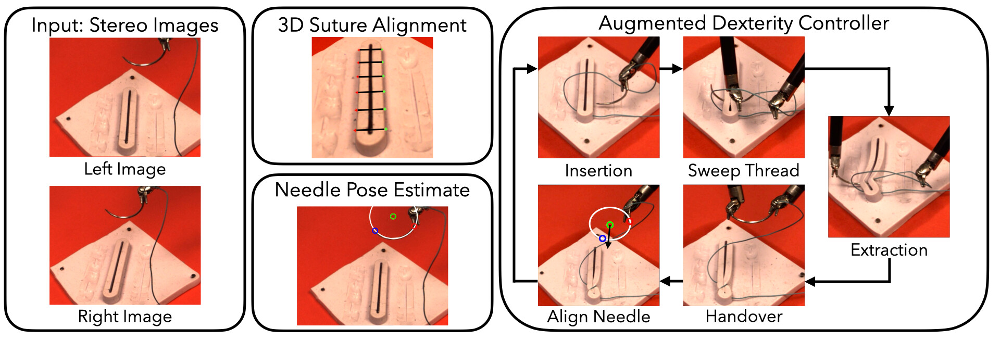
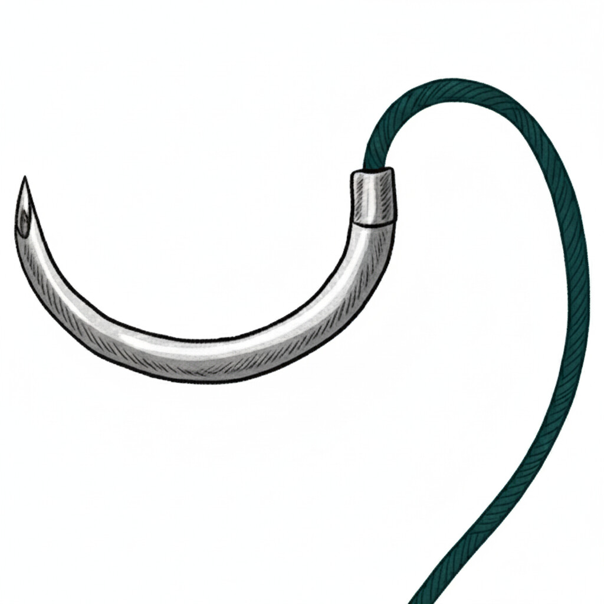
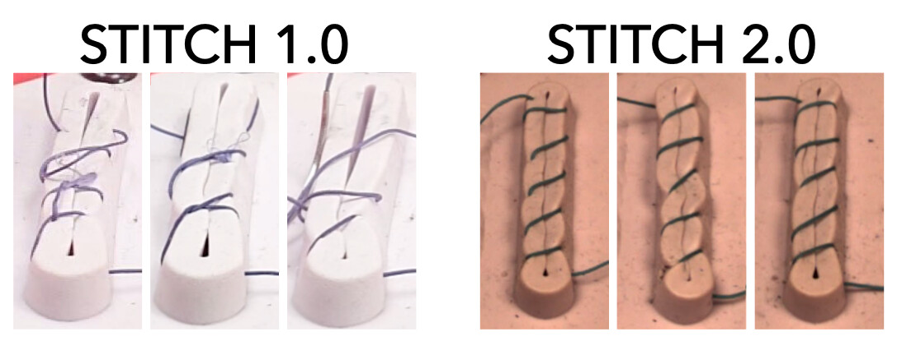
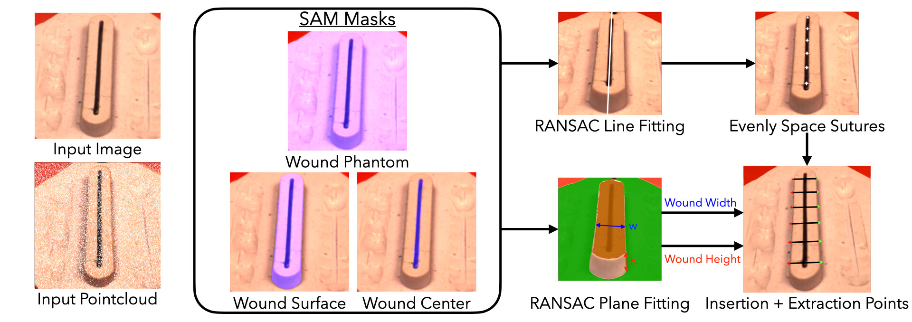
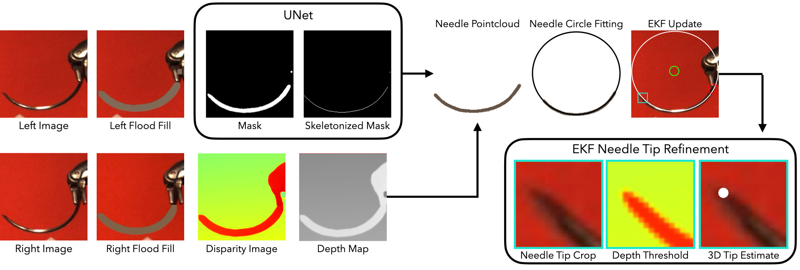

STITCH 2.0
Extending Augmented Suturing with EKF Needle Estimation and Thread Management
UC Berkeley
RA-L 2025


TL;DR: Autonomous suturing with the da Vinci robot
We developed an autonomous suturing pipeline using stereo images for 3D Suture Alignment, Needle Pose Estimation, and Augmented Dexterity Control.


Augmented Dexterity
Given the high-risk nature of surgery, there are safety concerns about having fully autonomous robots perform surgical tasks like suturing. In contrast, Augmented Dexterity allows for robots handle specific subtasks autonomously, but with a human surgeon watching closely and ready to step in at a moment's notice.
STITCH 2.0 embodies this approach. While it's designed as an autonomous suturing pipeline, it allows human surgeons to intervene and provide guidance on the fly, without having to stop and restart the entire system.
STITCH 1.0 vs STITCH 2.0
STITCH 2.0 outperforms STITCH 1.0 by completing more sutures in less time.
Additionally, STITCH 2.0 delivers higher quality sutures that are evenly spaced and close the wound.

How it works
3D Suture Alignment
We determine the suture entry and exit points by segmenting the wound pointcloud and evenly distributing sutures along the wound.

Needle Pose Estimation
We estimate the needle pose by segmenting the needle pointcloud, fitting a 3D circle to it, and refining the tip position with an Extended Kalman Filter.

Augmented Dexterity Control
Based on the suture alignment and needle pose estimation, we can perform autonomous suturing with 5 subtasks: needle insertion, thread slack management, needle extraction, needle handover, and needle alignment.
Limitations
STITCH 2.0 sometimes fails in needle insertion and handover alignment because of millimeter-level positioning errors stemming from the dVRK's cable-driven design. We performed a deep calibration to reduce the error under 1 mm, but even that level of precision isn't always enough.
Acknowledgements
We thank Madison Veliky, Chung Min Kim, and Justin Kerr for their feedback on paper drafts and insightful conversations about the project. We thank Intuitive Surgical and the National Science Foundation for the dVRK.
The da Vinci Research Kit was supported by the National Science Foundation, via the National Robotics Initiative (NRI) and in part by the collaborative research project "Software Framework for Research in Semi-Autonomous Teleoperation" between The Johns Hopkins University (IIS 1637789), Worcester Polytechnic Institute (IIS 1637759), and in part by the University of Washington (IIS 1637444).
Citation
If you use this work or find it helpful, please consider citing: (bibtex)
@article{hari2025stitch,
title={STITCH 2.0: Extending Augmented Suturing with EKF Needle Estimation and Thread Management},
author={Hari, Kush and Chen, Ziyang and Kim, Hansoul and Goldberg, Ken},
journal={IEEE Robotics and Automation Letters},
year={2025},
publisher={IEEE}
}